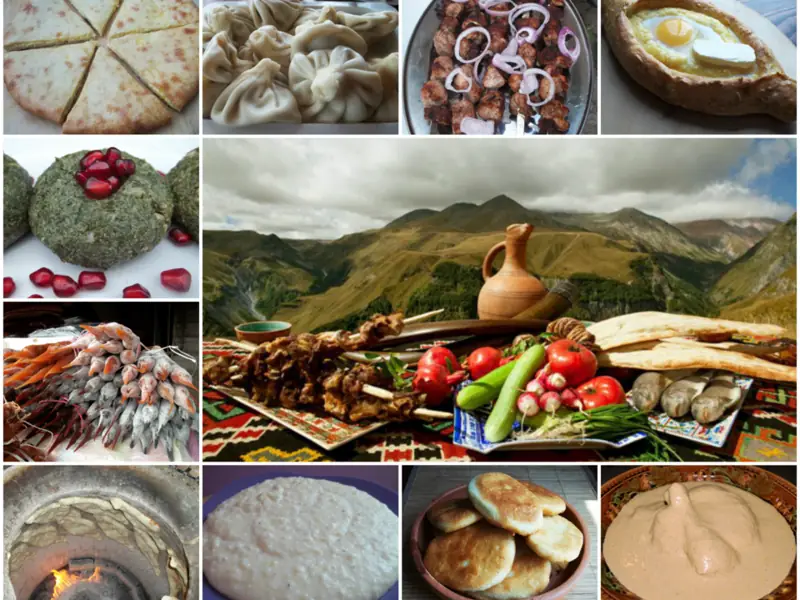

Фото: www.georgianrecipes.net (Uploader Giorgi Balakhadze), CC BY 3.0

Хачапури по-имеретински на сковороде
Закрытая лепёшка на кефире с сулугуни внутри, жарится на сухой сковороде
50 мин4 порц.800 ккал на порциюБ 36 · Ж 40 · У 74Кавказская кухня
Продукты на 4 порц.
- Кефир250 мл
- Яйцо куриное1 шт
- Сода0,5 ч. л.
- Соль1 ч. л.
- Сахар1 ч. л.
- Растительное масло1 ст. л.
- Мука пшеничная2,5 стак.
- Сулугуни450 г
- Сливочное масло25 г
Как готовить
- Смешайте кефир с содой и подождите 2 минуты, пока он вспенится. Добавьте яйцо, соль, сахар и масло, перемешайте.
- Всыпайте муку частями и замесите мягкое, чуть липнущее к рукам тесто, 5 минут. Накройте и оставьте на 15 минут.
- Натрите сыр на крупной тёрке и разделите на 2 части, каждую сожмите в плотный шар.
- Разделите тесто на 2 части. Каждую расплющите в круг 15 см, положите сыр в центр, соберите края наверх и плотно защипните.
- Переверните заготовку швом вниз и руками или скалкой раскатайте в лепёшку 1 см толщиной по размеру сковороды. В центре проделайте пальцем маленькую дырочку для пара.
- Выложите на сухую разогретую сковороду, накройте крышкой и жарьте на огне ниже среднего 5-6 минут, до золотистых пятен. Переверните и жарьте ещё 5 минут.
- Сразу смажьте горячую лепёшку сливочным маслом, нарежьте как пиццу и подавайте, пока сыр тянется.
Совет. Если сулугуни очень солёный, добавьте к нему треть брынзы или адыгейского сыра, вкус станет мягче. Тесто должно быть мягким: тугое при раскатке рвётся и сыр вылезает.